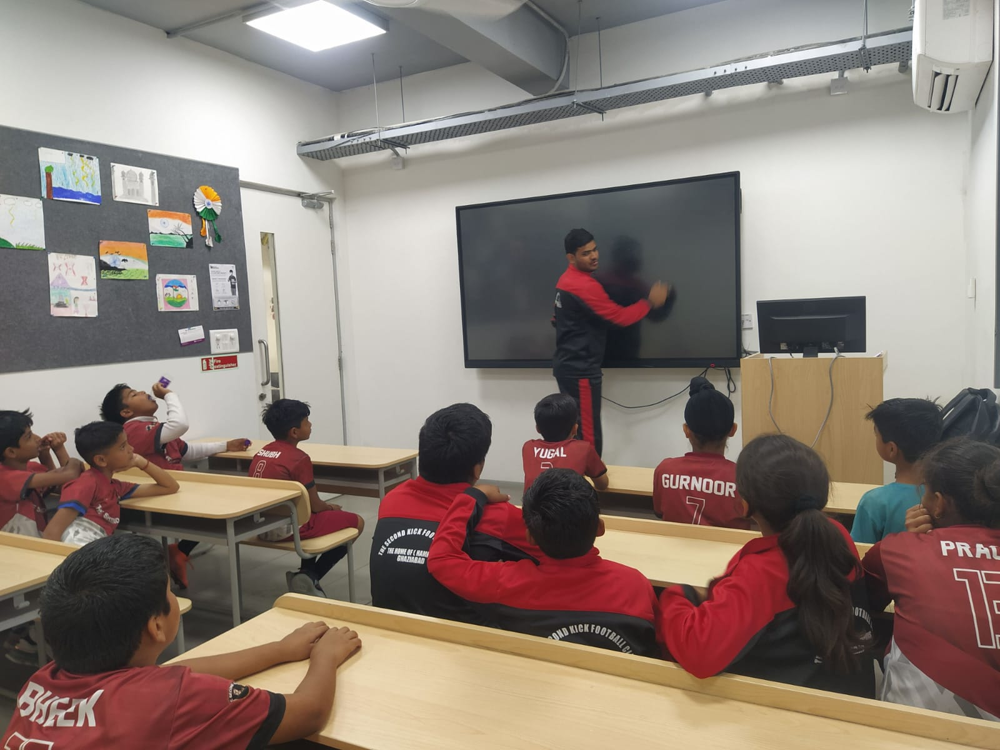

A Day at Second Kick

6:00 AM - 8:00 AM: Morning football training session, focusing on skills, fitness, and teamwork.

8:00 AM - 9:00 AM Educational classes and mentoring sessions to ensure holistic development.

4:30 PM - 6:30 PM: Evening football training session with tactical drills.

6:30 PM - 7:30 PM: Evening football matches and tactical training.